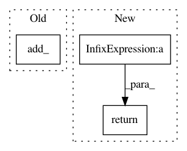

157041a86ecda19d43967fc3028d7b48fe17b243,gpytorch/mlls/variational_elbo.py,VariationalELBO,forward,#VariationalELBO#Any#Any#,22
Before Change
else:
log_prior = torch.zeros_like(log_likelihood)
for _, prior, closure, _ in self.named_priors():
log_prior.add_(prior.log_prob(closure()).sum())
if had_added_losses:
return log_likelihood, kl_divergence, log_prior.div(self.num_data), added_loss
else:
return log_likelihood, kl_divergence, log_prior.div(self.num_data)
After Change
log_prior.add_(prior.log_prob(closure()).sum().div(self.num_data))
if self.combine_terms:
return log_likelihood - kl_divergence + log_prior - added_loss
else:
if had_added_losses:
return log_likelihood, kl_divergence, log_prior.div(self.num_data), added_loss
else:
In pattern: SUPERPATTERN
Frequency: 3
Non-data size: 3
Instances
Project Name: cornellius-gp/gpytorch
Commit Name: 157041a86ecda19d43967fc3028d7b48fe17b243
Time: 2019-11-10
Author: gpleiss@gmail.com
File Name: gpytorch/mlls/variational_elbo.py
Class Name: VariationalELBO
Method Name: forward
Project Name: cornellius-gp/gpytorch
Commit Name: 05372fc59dcc73817a75ec3b6e37c72689d2600a
Time: 2017-08-18
Author: gpleiss@gmail.com
File Name: gpytorch/__init__.py
Class Name:
Method Name: add_jitter
Project Name: pytorch/examples
Commit Name: 67e5b062a27561aeca5d1bc8ffc623ea1ff629fb
Time: 2019-03-06
Author: zuoxingdong@users.noreply.github.com
File Name: vae/main.py
Class Name: VAE
Method Name: reparameterize